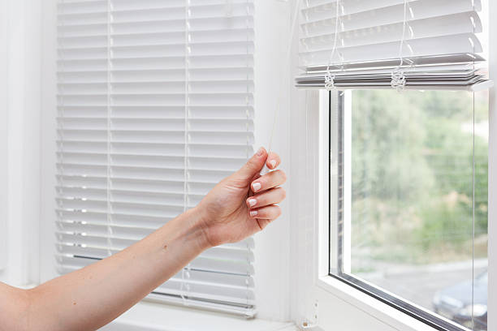
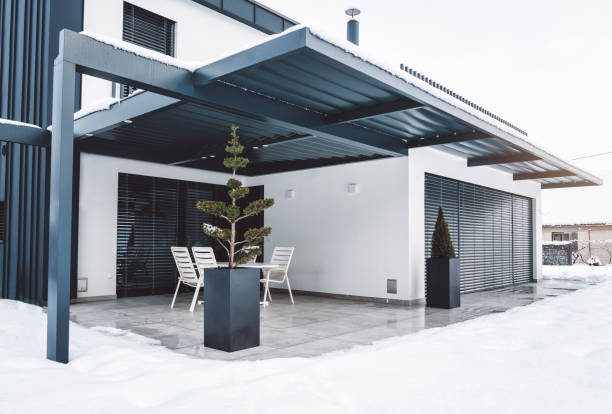

Suwanee Georgia
info@deliwindowsblinds.xyz
Suwanee Georgia
info@deliwindowsblinds.xyz

Upgrade your windows with our custom Windows Blinds in Suwanee Georgia . Our professional team provides personalized solutions and expert installation for a sleek, modern look that complements any interior.
Click Here To Call Us (888) 912-1629Transform your space with premium Windows Blinds from our top-rated company, serving Suwanee Georgia . Our extensive range of high-quality blinds offers a perfect solution for every window in your home or office. Whether you're seeking classic elegance or modern sophistication, our diverse selection ensures you'll find the ideal style to complement your decor.
At our company, we prioritize both functionality and aesthetics. Our Windows Blinds not only enhance the visual appeal of your interiors but also provide excellent light control and privacy. From sleek roller blinds and versatile vertical blinds to stylish Venetian blinds and cozy cellular shades, we offer an array of options tailored to meet your needs.
Our expert team in Suwanee Georgia is dedicated to delivering exceptional service, from free consultations to professional installation. We work closely with you to understand your requirements and recommend the best blinds to fit your space and budget. Each product is crafted from high-quality materials to ensure durability and long-lasting performance.
Choose us for your Windows Blinds needs and experience the perfect blend of style, functionality, and customer satisfaction. Contact us today to schedule a consultation and discover how our blinds can transform your living or working environment in Suwanee Georgia .
Residential & commercial Windows Blinds
Quality services at affordable prices
Immediate 24/ 7 emergency services


Choosing the right type of blinds for your windows in Suwanee Georgia can transform your home’s aesthetics and functionality. At Deli Windows Blinds, we’re dedicated to helping you select the perfect blinds to meet your needs and complement your interior design.
1. Consider Your Style and Functionality: Start by defining the look you want to achieve. For a modern, sleek appearance, consider vertical or horizontal blinds. If you prefer a more traditional or cozy feel, wooden or fabric blinds might be ideal. Assess your room’s purpose—different blinds offer varying levels of light control and privacy. Cellular blinds, for instance, are excellent for insulation and light diffusion, while roller blinds provide a minimalist look with easy functionality.
2. Assess Light Control and Privacy Needs: Different blinds offer different levels of light control and privacy. If you need maximum privacy and light blockage, opt for blackout or privacy blinds. For a softer, diffused light, consider sheer or semi-sheer blinds.
3. Think About Maintenance: Some blinds require more maintenance than others. Faux wood and aluminum blinds are easy to clean and maintain, while fabric blinds may need more frequent attention. Choose a material that fits your lifestyle and cleaning preferences.
4. Measure Accurately: Proper measurement is crucial for a perfect fit. Measure your windows carefully to ensure your blinds fit correctly. Our team at Deli Windows Blinds in Suwanee Georgia can assist with professional measurements and installation.
5. Budget Considerations: Finally, consider your budget. Deli Windows Blinds offers a range of options to fit various price points, from affordable to high-end, without compromising quality.
Transform your windows with the right blinds from Deli Windows Blinds. Contact us today in Suwanee Georgia to explore our extensive collection and get expert advice tailored to your needs.
Residential & commercial Windows Blinds
Quality services at affordable prices
Immediate 24/ 7 emergency services
Our custom shades and blinds in Suwanee Georgia are designed to reflect your unique style while offering practical benefits. We work closely with you to create treatments that complement your décor and fit your specific window measurements and preferences. Our skilled craftsmen use high-quality materials to produce shades and blinds that enhance any room's ambiance. Let us collaborate with you to design the perfect custom solutions for your space.

Installing window blinds at home is a significant step in showcasing your style while enhancing functionality. Our home window blinds installation services guarantee a professional finish, providing you with peace of mind that your window treatments will be installed expertly. We offer a variety of options that cater to diverse tastes and requirements, ensuring you find the ideal solution for your home. Trust our experienced team to handle every detail from start to finish.

Understanding the window blind installation cost is essential for effective budgeting. We pride ourselves on offering transparent pricing with no hidden fees. Our team will provide you with a detailed estimate based on your specific needs, including blind selection, measurements, and installation. We believe in delivering value for money without compromising quality, ensuring you receive beautiful and functional window treatments that fit within your budget.

Maintaining the beauty and functionality of your window blinds requires regular cleaning, which is where our window blind cleaning services come in handy. We offer professional cleaning solutions tailored to various types of blinds, ensuring they remain in pristine condition. Our trained technicians use effective methods and eco-friendly products to preserve the quality of your blinds while eliminating dust, allergens, and grime. Choose us to keep your window treatments looking their best.

Consider upgrading to energy-efficient window blinds in Suwanee Georgia for both comfort and savings. These blinds are designed to help regulate indoor temperatures, reducing your reliance on heating and cooling systems. As a result, you can save on energy bills while contributing to a more sustainable environment. Our selection includes a variety of stylish and functional options that promote energy efficiency without sacrificing style. Trust us to help upgrade your home or office with our eco-friendly solutions.
Embrace sustainability with our solar window blinds installation services. These innovative window treatments are designed to reduce glare and heat from the sun, keeping your indoor spaces comfortable while being environmentally friendly. Our team specializes in the installation of solar blinds that filter UV rays, helping to safeguard your furnishings and flooring from fading while simultaneously providing privacy. Experience the perfect blend of functionality and modern design, reducing your reliance on artificial climate control with our expert installation.

Elevate your workspace with our office window blinds installation services . We understand that the right blinds can enhance productivity, comfort, and aesthetics in a professional setting. Our team offers a variety of stylish and functional options tailored for office environments, ensuring your employees enjoy ample light control and privacy. Let us assist you in creating an inviting office atmosphere with our high-quality window treatments.

Located conveniently our local blinds and shades store is your go-to destination for all your window treatment needs. Our commitment to quality products and exceptional customer service sets us apart in the community. Whether you’re looking for stylish blinds or functional shades, our local store offers a wide selection tailored to suit any type of residential or commercial space.
One of the benefits of shopping at a local store is the personalized service you receive. Our knowledgeable team is always ready to assist you in selecting the right window treatments that match your specific needs and preferences. We understand that the right blinds or shades can significantly impact your home or office’s aesthetics and functionality.
At our store, you can explore a variety of window treatment options firsthand. We offer an extensive selection of materials, colors, and styles, including roller shades, wooden blinds, vertical blinds, and more. This hands-on experience allows you to see and feel the products, giving you confidence in your purchase decisions.
Moreover, we pride ourselves on being part of the Suwanee Georgia community. Our local store fosters relationships with our customers, allowing us to understand the unique styles and preferences of our neighborhood. We are committed to ensuring that our product offerings reflect local tastes and trends.
In addition to selling blinds and shades, we also provide professional installation services. Our skilled technicians ensure that your new window treatments are fitted correctly and operate smoothly, providing maximum functionality while enhancing aesthetics.
Affordability is a priority in our local blinds and shades store. We believe that quality window treatments should be accessible to everyone, which is why we offer competitive pricing and regular promotions on select products.
Visit our local blinds and shades store today, and let us help you transform your spaces with beautiful, functional window solutions tailored to your needs. Experience the difference personalized service can make when selecting the perfect window treatments.
Years Experience
Expert Technicians
Satisfied Clients
Compleate Projects
At Deli Windows Blinds, we understand that choosing the right window treatments can transform your living space. Our commitment to providing top-notch windows blinds across Suwanee Georgia ensures that your home not only looks stunning but also functions efficiently.
Unmatched Quality and Variety
Our extensive range of window blinds is designed to cater to every taste and requirement. Whether you're looking for sleek, modern designs or classic, elegant styles, we offer products that meet the highest standards of quality and craftsmanship. From versatile vertical blinds to chic roller shades, every option in our collection is crafted to enhance your space.
Exceptional Customer Service
We pride ourselves on delivering personalized customer service that sets us apart from the competition. Our team of experts is dedicated to understanding your needs and providing tailored solutions that fit your budget and style. We guide you through the entire process, from selecting the perfect blinds to professional installation, ensuring a seamless and satisfying experience.
Local Expertise in Suwanee Georgia
As a locally owned business, we have deep roots in Suwanee Georgia and a profound understanding of the unique preferences and needs of our community. This local expertise allows us to offer bespoke solutions that are not only stylish but also practical for your specific environment.
Commitment to Satisfaction
Your satisfaction is our top priority. We stand by the quality of our products and services, and we’re committed to ensuring you’re thrilled with your new window blinds. Our dedication to excellence is reflected in our numerous satisfied customers across Suwanee Georgia .
Choose Deli Windows Blinds for exceptional quality, service, and local expertise. Contact us today to discover how we can transform your windows into a beautiful focal point of your home.
In today's world, ensuring your home's comfort and aesthetics goes hand in hand with choosing the right window treatments. Residential window blinds play a vital role in offering privacy, controlling light, and achieving a stylish look that complements your décor. At our company, we provide an extensive range of options, from traditional to modern styles, ensuring you find the ideal solution that aligns with your vision.
Our selection of window blinds includes a variety of materials, colors, and designs to suit any room in your home. Whether you are looking for elegant wooden blinds for your living room, chic faux wood blinds for a cost-effective alternative, or stylish roller blinds for your bedroom, we have it all. What sets our services apart is our commitment to customization. We believe that every home is unique and should reflect the personality of its owners. Our team works closely with you to select the right materials, colors, and styles that resonate with your preferences.
Choosing us means not only gaining access to high-quality products but also benefiting from our expert installation services. Our professional team understands the nuances of window treatments and ensures every installation is perfect, optimizing both aesthetics and functionality. We pride ourselves on providing a seamless installation experience, minimizing disruption to your daily routine.
Additionally, we recognize that affordability is key. We leverage our industry connections to offer you competitive pricing on a wide range of quality window blinds. Our customers can enjoy top-tier products without stretching their budgets.
When you choose our residential window blinds services, you can expect exceptional customer service. Our knowledgeable team is always available to answer questions and provide guidance throughout your buying journey. Whether you need advice on selection or assistance with installation, we are here to help.
Lastly, we consider energy efficiency in our offerings. Many of our window blinds are designed to minimize heat gain in the summer and retain warmth during winter, helping you lower those energy bills. By opting for our energy-efficient window treatments, you contribute to sustainable living while enhancing your home's comfort.
When it comes to window treatments, one size does not fit all. Custom window blinds installation provides the flexibility and personalization to match your unique style and home decor. We understand that every window is different and that your vision should be brought to life with high-quality materials. Our experienced team offers a comprehensive range of custom options from shape and size to color and texture.
From the moment you contact us, we will guide you through the entire process, starting with a consultation to understand your specific needs. We take precise measurements to ensure that your blinds fit just right. Our professional installation team ensures everything is secured, functional, and beautiful. Quality matters, which is why we source only the best products and provide exceptional service.
Who says elegance has to come with a hefty price tag? At our company, we believe everyone deserves access to stylish and functional window blinds without breaking the bank. Our collection of affordable window blinds combines quality with cost-effectiveness, allowing you to enhance your living space without overspending.
We meticulously curate an assortment of styles that cater to various budgets while not compromising on quality. From sheer and blackout options to traditional and modern designs, we have something for every taste. Our dedicated team also provides guidance on which blinds best fit your budget and needs, ensuring you get the best value for your investment.
Finding the best window blinds companies in Suwanee Georgia can be a daunting task. However, our extensive experience and dedication to customer service make us stand out in a crowded market. We are committed to providing superior products and exceptional service, earning customer loyalty through our professional approach and satisfaction guarantee. Our window blinds are crafted from high-quality materials, ensuring durability and style. Choose us for your window treatment needs and see why we're considered the best .
It’s essential to maintain the functionality and aesthetic appeal of your window blinds. Our window blinds repair services are here to help you restore your blinds to like-new condition. From fixing broken slats and cords to refurbishing older styles, we have the expertise to handle any repair job. Our skilled technicians utilize top-quality materials and techniques to guarantee a durable solution. Don’t let damaged blinds diminish your home’s charm; contact us for prompt and dependable repair services that save you money on replacements!
Proper installation is crucial for functionality and aesthetics when it comes to window blinds. Our professional window blinds installation service is designed to ensure your blinds are fitted correctly for superior performance and style.
Our experienced team understands the intricacies involved in the installation process, regardless of the type of window blinds you choose. They bring precision, care, and professionalism to every job. We take the headache out of DIY installation and guarantee that your new blinds will operate flawlessly. When you trust us for installation, you’re investing in peace of mind knowing the job will be done right.
When searching for a local window blinds store you want a reliable and accessible option. Our store is not just local; it is a hub of creativity and choice. We offer a diverse selection of window blinds tailored to suit various styles and budgets, making it easy for you to find exactly what you need. Our friendly staff is always available to assist you in selecting the right products, ensuring an enjoyable shopping experience. Experience the convenience and personal touch of shopping locally with us.
Experience the pinnacle of convenience with our motorized window blinds installation service. In today’s fast-paced world, technology enhances everyday living, and motorized blinds are a prime example. Our cutting-edge motorized window blinds can easily be controlled with the touch of a button, giving you effortless access to light management and privacy.
This state-of-the-art solution is perfect for hard-to-reach windows or simply for those who appreciate modernity. Our experienced team will ensure each motorized blind is installed properly, maximizing their functionality and ease of use. We provide comprehensive demonstrations, ensuring that you are comfortable and confident using your new window treatment.
Transform your living spaces with our exquisite collection of window blinds for homes. Your home is your sanctuary, and we are here to help you express your style through our selection of high-quality window blinds.
From classic wooden blinds to chic vertical and horizontal designs, our extensive range of options ensures that you find the perfect match for your decor. Each type of blind offers various benefits, such as light control, insulation, and aesthetic appeal. Our expert consultants are available to help you select the best options tailored to your individual needs, whether you desire privacy, style, or energy efficiency.
Create a professional and productive working environment with our specialized window blinds for offices. The right window treatments can significantly impact your workspace by providing light control, privacy, and comfort.
Our selection includes everything from elegant vertical blinds to sophisticated roller shades that enhance your office's aesthetic while ensuring functionality. Our team understands the unique needs of different industries and can recommend products that boost workplace efficiency. Beyond aesthetics, our window blinds offer energy-efficient properties that can reduce your energy costs, creating a sustainable workplace.
Sliding glass doors present unique challenges when it comes to window treatment, but we specialize in creating functional and stylish solutions. Our blinds for sliding glass doors in Suwanee Georgia are designed to maximize usability without sacrificing aesthetics or light control. Choose from vertical blinds, pleated shades, or sheer options that elegantly frame your door while maintaining smooth operation. With our installation expertise, we guarantee a beautiful finish that suits your lifestyle and adds value to your home.
Nothing adds a touch of elegance and warmth to your home’s décor quite like wooden window blinds. They offer a timeless appeal, complementing various interior styles from traditional to modern. Our company specializes in professional wooden window blinds installation providing an exceptional selection that enhances the beauty of your spaces while offering functionality and practicality.
Our wooden blinds are made from high-quality materials, crafted to ensure durability and performance. Each product is designed to resist warping and fading, ensuring that your blinds maintain their beauty and functional integrity over the years. With various finishes and slat sizes available, you can customize your wooden blinds to reflect your style and preferences.
The advantages of wooden window blinds extend beyond aesthetics. They offer excellent light control, enabling you to adjust the slats to create the desired level of brightness and privacy in your home. They are particularly suitable for bedrooms and living rooms, where ambiance and comfort are critical.
At our company, we understand that proper installation is essential when it comes to wooden window blinds. Our experienced team specializes in ensuring a perfect fit, with precise measurements and secure mounting for optimal performance. Once installed, our wooden blinds not only look stunning but also operate smoothly, adding to your home’s comfort.
In addition to installation, we offer a personalized consultation service to help you choose the right type and style of wooden blinds for your rooms. Our team is knowledgeable in various design aesthetics, ensuring you find the perfect match for your home’s décor.
Wooden blinds also provide energy efficiency benefits by helping regulate temperature within your home. By keeping direct sunlight out, they can contribute to lowering heating and cooling costs, making them a smart investment for homeowners in Suwanee Georgia .
Customer satisfaction is our priority, and we are dedicated to providing exceptional service from the moment you contact us. We pride ourselves on our transparent pricing with no hidden fees, ensuring you know what to expect from the installation process.
Choose our experienced team for wooden window blinds installation in Suwanee Georgia and enhance your living spaces with these timeless, elegant window treatments that offer beauty and functionality.
Vertical window blinds are highly functional and offer a contemporary look for large windows or sliding glass doors. Our extensive collection of vertical blinds offers various colors, patterns, and materials, allowing you to match your decor perfectly.
This practical solution allows for easy operation and offers exceptional light control, making it an ideal choice for any space, from homes to offices. Our professional installation team ensures that your vertical blinds are fitted flawlessly, enhancing your interior while providing the desired privacy and light management.
If you love the look of wood but seek a more affordable and maintenance-free option, our faux wood window blinds are the perfect solution. Faux wood offers the same warmth and inviting appearance as wooden blinds, but with added durability and moisture resistance, making them suitable for any room in your home.
Our faux wood window blinds come in various colors and styles, so you can easily find the perfect match to enhance your space. Our skilled installation team guarantees that your blinds will be fitted perfectly and operate smoothly, ensuring a seamless addition to your home or office decor.
For those who value privacy and light control, our affordable blackout blinds are the perfect solution. They are designed to block out sunlight completely, creating an ideal environment for restful sleep or reducing glare in entertainment spaces. Our company specializes in providing a variety of blackout options tailored to meet your needs in Suwanee Georgia .
Blackout blinds are particularly popular in bedrooms, home theaters, and nursery rooms. They create a dark, serene atmosphere that promotes relaxation and enhances your ability to sleep soundly. With various fabric options available, our blackout blinds are not only functional but also stylish, allowing you to complement your home décor seamlessly.
We understand that affordability is a significant consideration when selecting window treatments. Our aim is to provide high-quality blackout blinds at competitive prices, ensuring that every homeowner in Suwanee Georgia can enjoy the benefits of total light control without breaking their budgets.
In addition to style and affordability, our blackout blinds also offer energy efficiency benefits. By preventing heat from entering or leaving your home, they can help you maintain a comfortable indoor temperature year-round, potentially leading to savings on energy bills.
Our experts assist you in choosing the right type of blackout blinds for your space. We offer various styles, including roller blinds, cellular shades, and pleated shades, allowing you to select options that enhance both functionality and aesthetics.
Our professional installation services ensure a perfect fit, allowing your blackout blinds to perform optimally. Our experienced team understands the importance of precise measurements and secure installation to ensure that your blinds operate smoothly and provide maximum light-blocking capabilities.
Customer satisfaction is at the heart of our business. We pride ourselves on our ability to provide honest, transparent service at every turn. If you have questions about product selection, installation, or maintenance, our helpful team is always ready to assist.
Enjoy restful days and nights with our affordable blackout blinds . We are committed to providing quality products that enhance your living spaces while fitting into your budget.
Roller window blinds are synonymous with style and simplicity. They effortlessly blend functionality with aesthetics, making them a popular choice for homeowners throughout Suwanee Georgia . Our company specializes in roller window blinds installation, providing a range of styles and colors to suit any décor.
One of the most significant advantages of roller blinds is their versatility. They are suitable for any room in your home, from living areas to bedrooms and kitchens. The streamlined design allows for maximum light control while maintaining a modern appearance, making them an excellent choice for those who appreciate minimalism.
Our roller blinds come in various fabric choices, including light-filtering, room darkening, and blackout options. This selection enables you to customize the light control in your space, whether you want soft ambient light or complete darkness. Our knowledgeable team is here to assist you in selecting the right type of roller blinds that meet your requirements.
When it comes to installation, our experienced technicians are dedicated to making the process efficient and straightforward. Proper installation is crucial for rolling blinds to operate smoothly, and our team ensures that everything is fitted correctly so you can enjoy these stylish window treatments fully.
In addition to their good looks and practicality, roller blinds are generally low-maintenance. They can be cleaned easily using a damp cloth, ensuring they remain pristine and stylish for years. This feature makes them ideal for busy households and adds to their widespread appeal.
Our competitive pricing ensures that roller window blinds are accessible to all homeowners . We work diligently to provide exceptional value without compromising on quality, offering stylish products tailored to meet your budgetary needs.
Customer service is at the forefront of our business model. From the moment you reach out to us, we prioritize open communication and personalized assistance. We believe in making the entire experience enjoyable, from consultation and selection through to installation and beyond.
Enhance your home with our beautiful roller window blinds installation in Suwanee Georgia . Our focus is on providing you with quality products, skilled installation, and excellent service, making your window treatment journey seamless and satisfying.
When it comes to window coverings, consumers want the best options available in quality, style, and functionality. At our company, we are proud to be recognized as one of the best window covering providers in Suwanee Georgia . Our commitment to excellence is reflected in our carefully curated product selection and unparalleled customer service.
Whether you're looking for shades, blinds, drapes, or curtains, we offer a wide array of window coverings suitable for every room in your home or office. Our extensive selection includes everything from traditional wooden blinds to modern cellular shades, ensuring there is something to match every aesthetic and functional requirement.
What truly sets our offerings apart is our dedication to customization. We understand that every space is unique, so we work closely with our clients to help them select the perfect window coverings that match their decor and lifestyle. Our experienced design consultants are ready to guide you through the selection process, ensuring that you make informed choices that enhance your spaces.
Quality is paramount in everything we do. We source our products from reputable manufacturers, ensuring that every window covering we offer is crafted from top-quality materials. This commitment to quality not only enhances the aesthetics of your space but also guarantees durability and longevity.
Our professional installation services significantly enhance your experience. Proper installation is key to ensuring that your window coverings operate smoothly and look stunning. Our trained technicians bring years of experience to every job, ensuring that your new coverings are fitted perfectly with minimal disruption to your daily routine.
We pride ourselves on our transparent pricing and commitment to providing exceptional value. Not only are our products competitively priced, but we also believe in offering outstanding service at every stage of your journey—from selection and purchase to installation and beyond.
In addition to window coverings for homes, we also cater to commercial clients in Suwanee Georgia . No matter the size or style of your business, we are dedicated to providing window solutions that align with your corporate identity and meet the functional needs of your workspace.
Join the countless satisfied customers who have chosen us for their window covering needs . Our team is ready to help you transform your home or office with stylish, functional window solutions that bring beauty and comfort to your environment.
If your blinds are damaged or broken, acting quickly is essential to restore both their functionality and appearance. At Deli Windows Blinds, we offer expert guidance and solutions for homeowners in Suwanee Georgia facing issues with their window treatments.
1. Assess the Damage: Begin by identifying the nature of the damage. Common issues include bent slats, broken cords, or malfunctioning mechanisms. Understanding the specific problem will help you determine whether a simple repair or a full replacement is needed.
2. Try Simple Repairs: For minor issues, such as a loose slat or tangled cord, you may be able to perform a quick fix yourself. Check for manufacturer instructions or online tutorials for guidance on repairing or adjusting your blinds. However, ensure you use the right tools to avoid causing further damage.
3. Contact a Professional: If the damage is extensive or if you’re unsure how to proceed, it’s best to consult with a professional. Deli Windows Blinds offers repair services across Suwanee Georgia handling everything from broken mechanisms to replacing damaged slats. Our experienced technicians can quickly diagnose and fix issues, restoring your blinds to their original condition.
4. Consider Replacement: In cases where blinds are severely damaged or outdated, replacement might be the most practical solution. Deli Windows Blinds provides a wide selection of new blinds, ensuring you find an option that fits your style and budget. Our team can assist with the selection, measurement, and installation of new blinds.
Don’t let damaged blinds disrupt your home’s comfort and style. Contact Deli Windows Blinds in Suwanee Georgia for reliable repair and replacement services that will bring your window treatments back to their best.
Suwanee is a city in Gwinnett County and a part of the Atlanta metropolitan area in the U.S. state of Georgia. As of the 2010 census, the population was 15,355; this had grown to an estimated 20,907 as of 2019.
Yes, Deli Windows Blinds provides free consultations to help you choose the best blinds .
Yes, Deli Windows Blinds offers noise-reducing blinds designed to create a quieter environment in Suwanee Georgia .
Deli Windows Blinds offers a wide variety of blinds in Suwanee Georgia including vertical, horizontal, roller, Roman, and Venetian blinds to suit your style and functional needs.
Installation time varies, but most blinds are installed within a few hours by our professional team in Suwanee Georgia .
Yes, we offer motorized blinds allowing for easy operation and a modern touch to your space.
Yes, Deli Windows Blinds specializes in custom-sized blinds to ensure a perfect fit for any window in your Suwanee Georgia home or office.
Absolutely! Deli Windows Blinds provides free in-home measurements to ensure a perfect fit for your windows.
Deli Windows Blinds provides energy-efficient blinds designed to improve insulation and reduce energy costs .
Deli Windows Blinds provides blinds in a wide range of colors and finishes to suit any design preference .
Yes, Deli Windows Blinds offers child-safe blinds with cordless and motorized options to ensure safety homes.
You can schedule a consultation by calling our team or visiting the Deli Windows Blinds website to book an appointment in Suwanee Georgia .
Yes, Deli Windows Blinds offers a range of eco-friendly blinds made from sustainable materials, perfect for Suwanee Georgia homeowners prioritizing sustainability.
Deli Windows Blinds provides replacement parts and repair services for blinds purchased .
Yes, Deli Windows Blinds offers warranties on most of our products in Suwanee Georgia to ensure customer satisfaction.
Absolutely! Our professional team at Deli Windows Blinds offers full installation services for all window treatments .
Our experts at Deli Windows Blinds recommend regular dusting and occasional deep cleaning to keep your blinds in Suwanee Georgia looking great.
Yes, you can browse and order window blinds online through the Deli Windows Blinds website, serving Suwanee Georgia .
Deli Windows Blinds provides high-quality blackout blinds ideal for enhancing privacy and blocking out sunlight.
The cost of window blinds in Suwanee Georgia varies based on the material, size, and customization. Contact Deli Windows Blinds for a personalized quote.
Yes, Deli Windows Blinds offers flexible financing options to make your purchase more affordable in Suwanee Georgia .
Absolutely! Deli Windows Blinds specializes in custom blinds for unusual window shapes .
Yes, Deli Windows Blinds frequently runs seasonal promotions and discounts for customers .
Yes, our design experts can help you choose blinds that perfectly complement your interior décor.
Deli Windows Blinds provides durable and stylish blinds tailored to the needs of commercial spaces .
Deli Windows Blinds offers professional repair services to extend the life of your blinds .
Deli Windows Blinds offers blinds in materials like wood, faux wood, aluminum, and fabric for residents of Suwanee Georgia .
Depending on availability, Deli Windows Blinds strives to provide same-day installation services for your convenience.
Yes, Deli Windows Blinds offers durable and weather-resistant outdoor blinds to enhance your outdoor spaces.
Yes, Deli Windows Blinds offers free samples so you can choose the perfect color and material for your space.
Yes, Deli Windows Blinds offers special discounts on bulk orders for homes or commercial properties .
Deli Windows Blinds transformed my home in Suwanee Georgia . Their selection is extensive, and the quality is fantastic. The team was great to work with, making the entire process enjoyable! — Tiffany S.
Profession
I highly recommend Deli Windows Blinds in Suwanee Georgia . Their team was friendly and attentive, guiding us through the selection process. The quality of the blinds is excellent, and they transformed our living room beautifully! — Jason L.
Profession
Deli Windows Blinds is the go-to place for window treatments in Suwanee Georgia . The selection is diverse, and the prices are competitive. The installation team did a fantastic job, and our home feels more complete! — Richard A.
Profession
Suwanee GA Windows Blinds Pros
(888) 912-1629
info@deliwindowsblinds.xyz
09.00 AM - 09.00 PM
09.00 AM - 12.00 PM